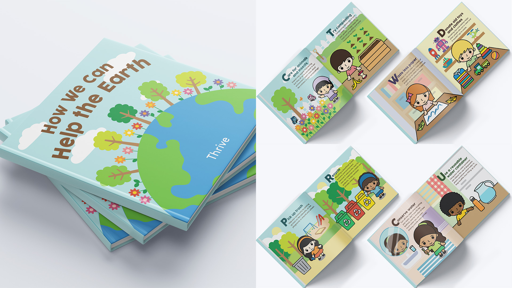

biography
Kumusta! I am Julian Dela Cruz. I am a final-year student soon to graduate with a Bachelor of Design double majoring in Communication Design and Media Design. I am excited to get into the real world and apply the skills that I have learned throughout my journey here at The University of Waikato.
Ever since I was a child, I have always been into art. I do painting, sketching, calligraphy and video editing as a hobby. I’ve always wanted to be in the creative field and I knew that I wanted that for my career as well. I see Design as an art form where I could show and express my creativity. That is why I chose to study Design in order to pursue my passion for art. Luckily, the Waikato offered both Communication Design and Media Design, both majors that I was really interested in. When I first studied Design, I didn’t know how to use Adobe softwares such as Illustrator, Photoshop, and InDesign. Studying here at the University of Waikato has taught me a lot about design and the skills that I am capable of, as well as building my confidence. It also gave me a lot of opportunities and helped me grow as a designer and as the person that I am today. During my time at Waikato, I have learned that my areas of interest are branding, illustrating, print design, and motion graphics.
project description
While the rest of the world sees us as clean and green, we have significant problems in New Zealand. Every year, New Zealand discards 15.5 million tonnes of waste. That is 3,200kg for every kiwi! But behind New Zealand’s clean and green image is a dirty truth — its freshwater rivers are among the most polluted in the developed world. About 60% of the country's rivers are polluted beyond tolerable levels, with 95 to 99 percent of rivers in pastoral, urban, and non-native forested areas contaminated. That is why I have created an organisation called “Thrive”.
“Thrive” is a clean-up organisation that addresses the problem of pollution and waste where anyone could volunteer and help clean up different areas or locations. It could help unite community groups, schools, businesses, local governments, and individuals. “Thrive” was also made to promote family time and to educate children about the environment from an early age because children can influence older people to make a change, since children are a catalyst for change.
I designed a poster to promote the clean-up event and the organisation. I've also created an educational
children's book titled "How We Can Help the Earth" as well as several deliverables such as postcards
that includes the different activities that the children can participate in and collect throughout the
event. Bookmarks and stickers were also made to hand out to people to encourage them to support
"Thrive".
A clean-up organisation on how we can help the earth THRIVE.
Thrive

For more information contact us
Email: degreeshow@waikato.ac.nz
Faculty phone: 0800 924 528
Faculty information: cs.waikato.ac.nz